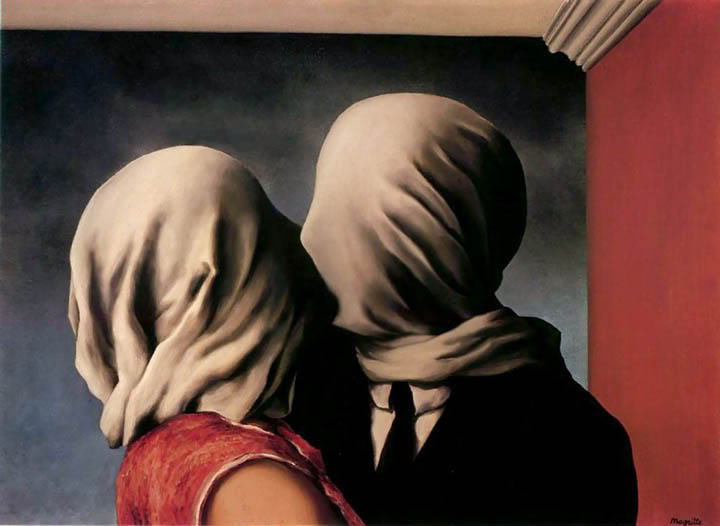
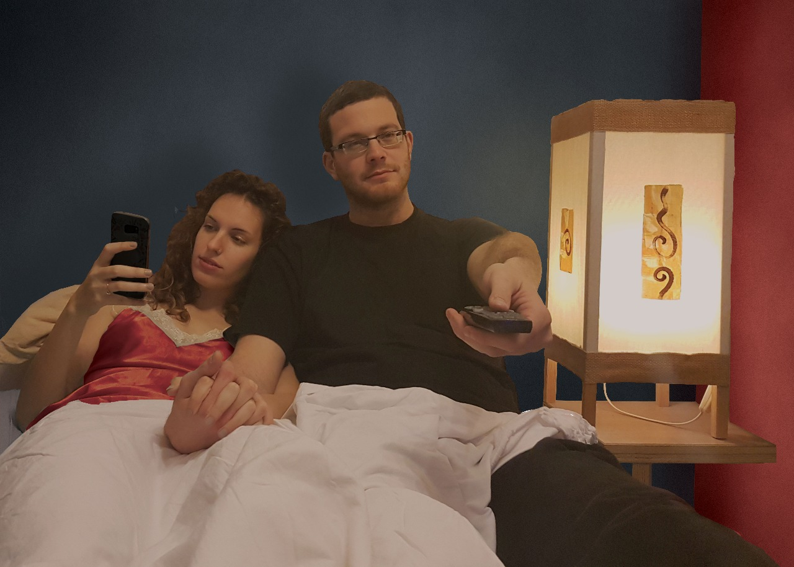

בפרויקט זה, המשותף לקורס תקשורת חזותית וקורס גרפיקה ממוחשבת, התבקשנו לתת פרשנות אישית ועכשווית ליצירה קיימת. בחרנו לעסוק ביצירה "הנאהבים" (1928) של האמן רנה מגריט.
 היצירה הקיימת
היצירה החדשה
העבודה בוצעה בתוכנת Adobe Photoshop.
בסרטון המצורף, הסברנו מהו הרעיון שעומד מאחורי היצירה החדשה שיצרנו.